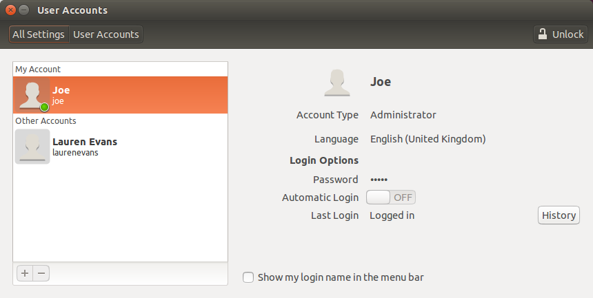

Computer things
-
To get jquery working on a website one requires a line at the start of the html file to source the jquery libraries from, as follows:
<script type="text/javascript" src="http://ajax.googleapis.com/ajax/libs/jquery/1.9.1/jquery.min.js"> </script>Now that I found the right one I find it quite easy to search for, but for some reason I really couldn't find it for a long time.
-
I wanted to scroll the navigation bar to left of this page whilst having it fixed as an html element. To do this I used this advice from stackoverflow.
-
I use (possibly have used, by the time you read this) the colour scheme solarized. This colour scheme is available on many platforms, but I particularly use it on Vim. After following the linked install instructions, it wasn't quite working properly, giving patchy elements like this:
To solve this issue you can add the following lines to your .vimrc file (if you don't have one then create it):
if $COLORTERM == 'gnome-terminal' set t_Co=256 endifMoreover, if you like the colour scheme then there are options for pentadactyl and theme for Firefox.
-
For a long time Ubuntu wouldn't ask me for my password at login, despite having selected for it to do so from the GUI, as below:
I resolved this by following the advice here